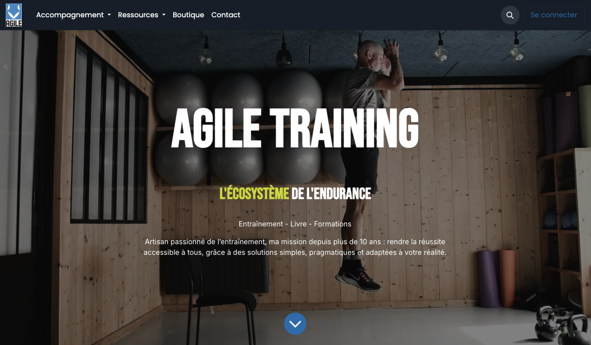
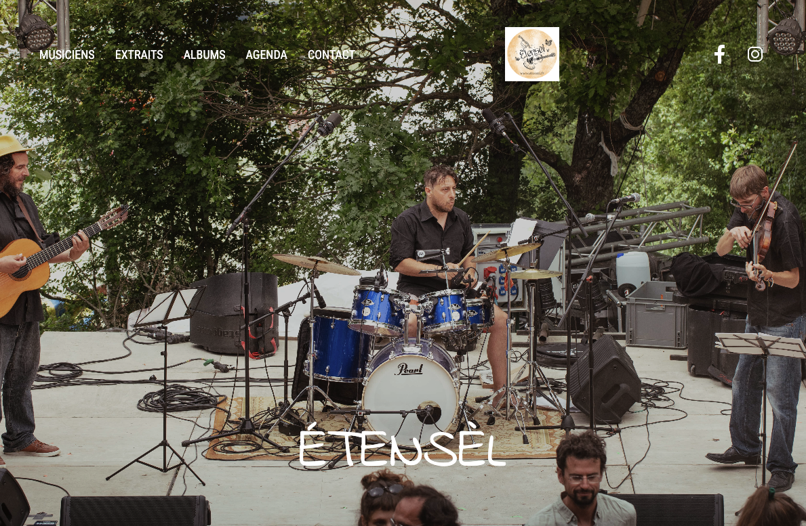
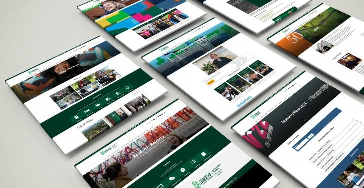

Technologie
C’est en sortant de ma zone de confort que j’ai découvert un univers structuré, stimulant qui m’a immédiatement captivée.
C’est dans ce contexte que je me rends dans une école… et que, par erreur, je suis inscrite à un concours de développement web, avec des prérequis que je n’avais absolument pas. À ce moment-là, je ne savais même pas ce qu’était un langage de programmation.
Plutôt que de renoncer, je tente l’expérience. Et contre toute attente, je découvre une logique qui me plaît immédiatement : un univers structuré, stimulant, où chaque problème appelle une solution.
Cette première expérience me surprend autant qu’elle me motive, au point que l’école me propose d’intégrer directement une formation en développement web.
Je me forme alors de manière intensive pendant plusieurs mois, avant de poursuivre avec une première expérience en entreprise, puis un poste dans le domaine pendant un an et demi.
Ce qui me plaît dans la tech, c’est cet équilibre entre algorithme et créativité : une logique omniprésente, combinée à une vraie liberté de construction, où chaque élément s’assemble pour créer quelque chose de cohérent, fonctionnel et unique. Un terrain d’expression idéal pour une personnalité à la fois créative et organisée.
Cette logique m’a naturellement amenée à m’intéresser à l’automatisation et aux outils marketing, afin de créer des systèmes fluides, efficaces et adaptés aux besoins réels des projets.
Aujourd’hui, je conçois des projets web clairs, structurés et efficaces, pensés pour répondre aux besoins concrets de chaque client.
Prestations
Des solutions concrètes pour créer, améliorer et structurer vos projets web.
Création de site
Conception de sites web sur mesure, alignés avec votre activité, vos objectifs et votre image.
Intégration web
Mise en page responsive et intégration fidèle de vos maquettes (HTML / CSS).
Refonte & optimisation
Amélioration du design, de la structure et des performances de votre site existant.
CMS
Mise en place et gestion de sites (WordPress, Odoo, Systeme.io Hostinger).
Automatisations
Mise en place de systèmes automatisés (emails, parcours clients) pour gagner du temps et fluidifier votre activité (ActiveCampaign et Zapier).
Accompagnement
Accompagnement pour clarifier, structurer et faire évoluer vos projets digitaux.
Réalisations
Quelques projets réalisés en développement web, intégration et gestion de CMS, avec une approche orientée structure, performance et expérience utilisateur.
Possibilité de livraison rapide sur des sites vitrines simples (one-page, landing page) selon les besoins du projet.
Chaque projet est conçu avec une approche simple : comprendre, structurer, puis construire efficacement.

Voir le projetMigration vers Odoo
Refonte et migration complète d’un site vers un nouvel environnement CMS (Odoo), incluant restructuration des contenus, adaptation technique et optimisation de la navigation.

Voir le projetIntégrations web
Réalisation de sites vitrines et intégrations responsive dans différents contextes de production.

Voir les projetsUX & design de sites templatisés
Conception et intégration de plus de 20 templates web dans un environnement structuré, avec une attention particulière portée à l’UX, à la lisibilité et à la cohérence visuelle des interfaces. Ces réalisations montrent ma capacité à adapter un design system à différents contenus et objectifs.
Exemples disponibles sur demande ou via LinkedIn.
Ils m’ont fait confiance
“Ce fut un plaisir de travailler avec Clémence . Développeuse talentueuse, persévérante et toujours prête à aller au bout des problèmes pour trouver une solution. Au plaisir de retravailler avec elle ! ;)”
— Arjun DEV, Développeur Web & Mobile“J'ai été le formateur référent de Clémence lors de son parcours de reconversion à l'IDEM. Lors de son entretien de sélection, malgré son profil très novice, ce qui m'a convaincu est son énorme capacité à relever les défis. Durant sa formation, elle a surmonté les difficultés les unes après les autres avec un mental d'acier. Elle a su se donner les moyens de réussir, et elle saura mettre cette force au service de vos projets.”
— Olivier BLANGERO, Filière informatique à l'IDEM“Quand j'ai rencontré Clémence en préparant une venue dans son centre de formation pour recruter des stagiaires, elle a su par ses singularités convaincre l'équipe de lui faire une place. Le paris a été gagnant, elle a réussi avec brio a, s'intégrer, mener a bien ses tâches et sortir grandie du stage. La motivation dont elle a fait preuve, les questions qu'elle a posées et sa persévérance ont fait de cette parenthèse une réussite. Merci !”
— Julien DECOSSE, développeurUn projet web à structurer, concevoir ou optimiser ?
Discutons de votre projet